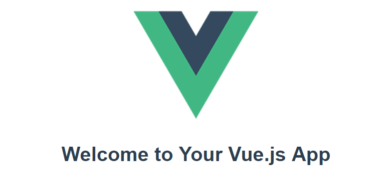

Using Vue in Visual Studio Code
Vue.js is a popular JavaScript library for building web application user interfaces and Visual Studio Code has built-in support for the Vue.js building blocks of HTML, CSS, and JavaScript. For a richer Vue.js development environment, you can install the Vetur extension which supports Vue.js IntelliSense, code snippets, formatting, and more.

Welcome to Vue
We'll be using the Vue CLI for this tutorial. If you are new to the Vue.js framework, you can find great documentation and tutorials on the vuejs.org website.
To install and use the Vue CLI as well as run the Vue application server, you'll need the Node.js JavaScript runtime and npm (the Node.js package manager) installed. npm is included with Node.js which you can install from Node.js downloads.
Tip: To test that you have Node.js and npm correctly installed on your machine, you can type
node --versionandnpm --version.
To install the vue/cli , in a terminal or command prompt type:
npm install -g @vue/cli
This may take a few minutes to install. You can now create a new Vue.js application by typing:
vue create my-app
where my-app is the name of the folder for your application. You will be prompted to select a preset and you can keep the default (babel, eslint), which will use Babel to transpile the JavaScript to browser compatible ES5 and install the ESLint linter to detect coding errors. It may take a few minutes to create the Vue application and install its dependencies.
Let's quickly run our Vue application by navigating to the new folder and typing npm run serve to start the web server and open the application in a browser:
cd my-app
npm run serve
You should see "Welcome to your Vue.js App" on http://localhost:8080 in your browser. You can press kbstyle(Ctrl+C) to stop the vue-cli-service server.
To open your Vue application in VS Code, from a terminal (or command prompt), navigate to the my-app folder and type code .:
cd my-app
code .
VS Code will launch and display your Vue application in the File Explorer.
Vetur extension
Now expand the src folder and select the App.vue file. You'll notice that VS Code doesn't show any syntax highlighting and it treats the file as Plain Text as you can see in the lower right Status Bar. You'll also see a notification recommending the Vetur extension for the .vue file type.
The Vetur extension supplies Vue.js language features (syntax highlighting, IntelliSense, snippets, formatting) to VS Code.
From the notification, press Install to download and install the Vetur extension. You should see the Vetur extension Installing in the Extensions view. Once the installation is complete (may take several minutes), the Install button will change to the Manage gear button.
Now you should see that .vue is a recognized file type for the Vue language and you have language features such as syntax highlighting, bracket matching, and hover descriptions.
IntelliSense
As you start typing in App.vue, you'll see smart suggestions or completions both for HTML and CSS but also for Vue.js specific items like declarations (v-bind, v-for) in the Vue template section:
and Vue properties (methods, computed) in the scripts section:
Go to Definition, Peek definition
VS Code through the Vue extension language service can also provide type definition information in the editor through Go to Definition (kb(editor.action.revealDefinition)) or Peek Definition (kb(editor.action.peekDefinition)). Put the cursor over the App, right click and select Peek Definition. A Peek window will open showing the App definition from App.js.
Press kbstyle(Escape) to close the Peek window.
Hello World!
Let's update the sample application to "Hello World!". In App.vue replace the HelloWorld component msg custom attribute text with "Hello World!".
<template>
<div id="app">
<img src="./assets/logo.png">
<HelloWorld msg="Hello World!"/>
</div>
</template>
Once you save the App.vue file (kb(workbench.action.files.save)), restart the server with npm run serve and you'll see "Hello World!". Leave the server running while we go on to learn about Vue.js client side debugging.
Tip: VS Code supports Auto Save, which by default saves your files after a delay. Check the Auto Save option in the File menu to turn on Auto Save or directly configure the
files.autoSaveuser setting.
Linting
Linters analyze your source code and can warn you about potential problems before you run your application. The Vue ESLint plugin (eslint-plugin-vue) checks for Vue.js specific syntax errors which are shown in the editor as red squigglies and are also displayed in the Problems panel (View > Problems kb(workbench.actions.view.problems)).
Below you can see an error when the Vue linter detects more than one root element in a template:
Debugging
You can debug client side Vue.js code with the built-in JavaSCript debugger. You can learn more from the Vue.js debugging in VS Code recipe on the VS Code debugging recipes site.
Note: There are currently issues with the sourcemaps generated by vue-cli, which cause issues with the debugging experience in VS Code. See https://github.com/vuejs/vue-loader/issues/1163.
Another popular tool for debugging Vue.js is the vue-devtools plug-in.
Other extensions
Vetur is only one of many Vue.js extensions available for VS Code. You can search in the Extensions view (kb(workbench.view.extensions)) by typing 'vue'.
There are also Extension Packs which bundle extensions that other people have found useful for Vue.js development.